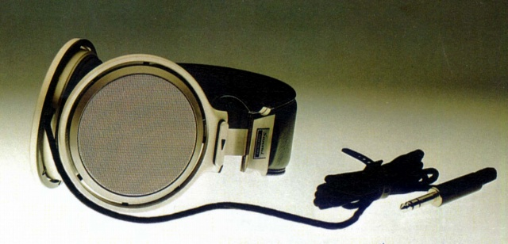
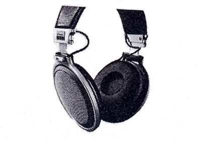
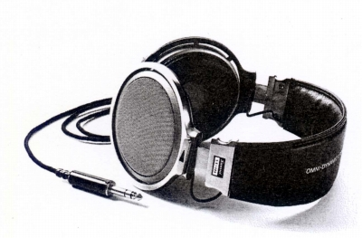

SS-100



■価格 16,000円■型式 イソダイナミック型（オムニダイナミック型との資料もあり）■振動板 6ミクロン厚ポリエステル■インピーダンス 75Ω■再生周波数帯域 20-20,000Hz■許容入力 600mW（250mWとの資料もあり）■感度 94dB■コード 2m■重量 450g（コード含まず）■発売 1975年10月■販売終了1977年頃■備考 異方性マグネット使用の記述あり
サンスイのインデックスへ